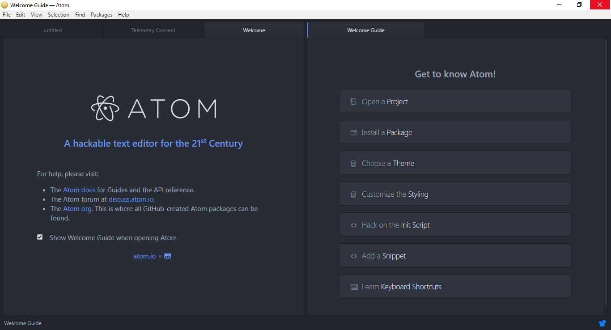
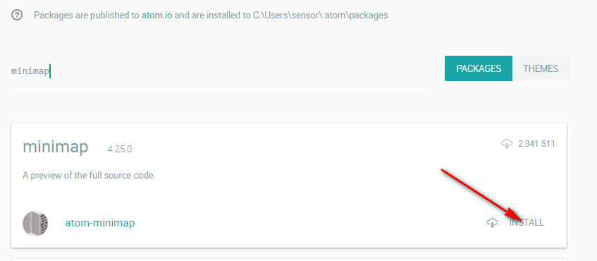
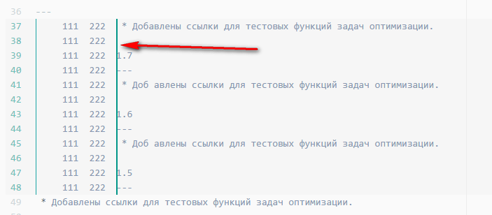
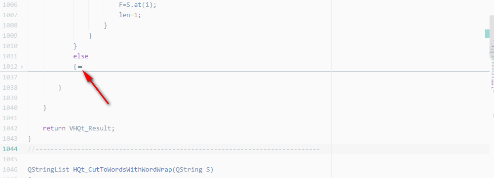

Настройка Atom (full version)
Полная инструкция по установке, настройке, работе с FAQ.
21.09.2016 40 комментариев 132 823 просмотров
Свершилось! Наконец-то в Atom появилась проверка орфографии русского и английского языка! Так что опять возвращаюсь к теме Atom.
Введение
Некоторое время назад, я пытался перейти с Notepad++ на Atom, а до этого на Sublime Text. Но всякий раз попытки были безуспешными, так как некоторых привычных инструментов из Notepad++ не хватало. Для Atom самым главным минусом для меня было отсутствие проверки орфографии русского языка.
Но проверка орфографии появилась! Поэтому попытаюсь еще раз перейти на этот продукт. И в данной статье я сведу все настройки, установки, советы по Atom, что буду использовать. В общем, вперед!
Установка
Скачиваем либо официальную последнюю версию с сайта, либо текущую последнюю версию y в GitHub.
Запускаем скаченный файл, и он автоматически запустит установку без всяких диалоговых окон.
После установки откроется редактор.

Снимаем галочку, чтобы при каждом старте не показывалось приветственное окно.
Первоначальная настройка
Перейдем в настройки приложения File → Settings.
Снимаем галочку с пункта Open Empty Editor On Start в разделе Core, чтобы при запуске программы открывались последние открытые файлы.
Также в разделе Core можно указать папку ваши основных проектов.
В разделе Editor включаем переносы строк Soft Wrap.
В этом же разделе можно указать сколько пробелов будет ставиться при нажатии на табуляцию.
Открытие файлов и каталогов через контекстное меню
Идем File → Settings.
В разделе System добавляем в контекстном меню возможность открывать файлы и папки с помощью Atom.
Но, у меня почему-то не при последней установке данные команды не сработали. И никакие шаманства не помогли. Пришлось вручную добавлять соответствующие команды в реестр Windows 10.
Для этого создайте текстовой файл расширения .reg (например, open-w-atom.reg) с подобным содержанием:
Windows Registry Editor Version 5.00 ; when you right click a file [HKEY_CLASSES_ROOT\*\shell\Atom KI ext] ""="Open File in Atom" "Icon"="C:\\Users\\sensor\\AppData\\Local\\atom\\app-1.11.0-beta5\\atom.exe" [HKEY_CLASSES_ROOT\*\shell\Atom KI ext\command] ""="C:\\Users\\sensor\\AppData\\Local\\atom\\app-1.11.0-beta5\\atom.exe \"%1\"" ; when you right click a folder [HKEY_CLASSES_ROOT\Directory\shell\Atom KI ext] ""="Open Folder in Atom" "Icon"="C:\\Users\\sensor\\AppData\\Local\\atom\\app-1.11.0-beta5\\atom.exe" [HKEY_CLASSES_ROOT\Directory\shell\Atom KI ext\command] ""="C:\\Users\\sensor\\AppData\\Local\\atom\\app-1.11.0-beta5\\atom.exe \"%1\"" ; when you right click a folder while holding shift [HKEY_CLASSES_ROOT\Directory\Background\shell\Atom KI ext] ""="Open Folder in Atom" "Icon"="C:\\Users\\sensor\\AppData\\Local\\atom\\app-1.11.0-beta5\\atom.exe" [HKEY_CLASSES_ROOT\Directory\Background\shell\Atom KI ext\command] ""="C:\\Users\\sensor\\AppData\\Local\\atom\\app-1.11.0-beta5\\atom.exe \"%V\"" ; when you right click the background, not on a particular file or folder. [HKEY_CLASSES_ROOT\LibraryFolder\Background\shell\Atom KI ext] ""="Open Folder in Atom" "Icon"="C:\\Users\\sensor\\AppData\\Local\\atom\\app-1.11.0-beta5\\atom.exe" [HKEY_CLASSES_ROOT\LibraryFolder\Background\shell\Atom KI ext\command] ""="C:\\Users\\sensor\\AppData\\Local\\atom\\app-1.11.0-beta5\\atom.exe \"%V\""
Везде текст C:\\Users\\sensor\\AppData\\Local\\atom\\app-1.11.0-beta5\\atom.exe поменяйте на путь к программе на вашем компьютере. Он будет обязательно другой у вас. И обратите внимание, что в пути у вас должны быть двойные слэши.
После этого запустите сохраненный файл и внесите изменения в реестр. После этого у вас в контекстном меню у файлов и папок появятся такие подобные пункты.
Выбор темы оформления (Material Design)
Идем File → Settings. И там идет в раздел Themes.
Там можно выбрать тему для оформления интерфейса Atom, а также для отображения непосредственно текста в документах.
Вот не люблю я темные темы для текстовых редакторов. Поэтому выбирал светлые темы.
Вот так будет выглядеть редактор с такими темами.
Если вы хотите найти и установить другие темы, то перейдите в раздел установки, а там выберете Themes для перехода в поиск тем.
Например, популярны темы в стиле Material Design.
Выбранные темы можно установить.
Я себе установил atom-material-ui и atom-material-syntax-light.
И они потом появятся в выборе тем:
Темы также имеют варианты настроек:
Я поменял основной цвет темы.
Сделал компактный вид панели вкладок.
Сделал компактным дерево папок.
После этих настроек редактор выглядит так:
Проверка орфографии на английском и русском языках
Идем File → Settings. Там идет в пакеты Packages.
В поиске установленных пакетов выбираем spell.
И в пакете spell-ckecker переходим в настройки.
И в разделе Locales напишите en-US, ru-RU.
После этого появится проверка орфографии одновременно английского и русского языка в документах. Обратите внимание, что в Windows должны быть установлены соответствующие языки, так как базу Atom берет оттуда.
Также в настройках поставьте галочку около Add Known Words. Тогда вам будет предлагаться добавлять новые слова в словарь.
Вызов подсказок о том, как можно исправить слово, делается через Ctrl + Shift + :.
Не для всех расширений файлов включается проверка орфографии. Чтобы подключить проверку в орфографии для файлов нового расширения, вызовете консоль Ctrl + Shift + P, находясь в файле. Там пропишите Editor: Log Cursor Scope и выберете этот пункт. И вы увидите внизу справа уведомление с одним или несколькими пунктами текста. Один из них будет означать тип документа.
У меня для LaTeX файлов этот тип определился как text.tex.latex.
Копируем этот тип и закрываем уведомление. Потом идем в настройки нашего пакета проверки орфографии.
И в разделе Grammars дописываем наш тип файлов.
Теперь проверка орфографии появилась и в LaTeX файлах.
Как могли заметить выше на моей светлой теме подсказки появляются с темным фоном. Исправим это.
И в файле styles.less вставляем такой код:
.select-list.popover-list { background-color: #fff; }
|
1 2 3 |
Update. Вставьте туда еще и этот код. Это не для проверки орфографии, но там тоже проблема с цветом фона.
.panel-heading { background-color: #fff; }
|
1 2 3 |
Сохраняем файл. Теперь подсказки будут появляться со светлым фоном.
Установка пакетов
Идем File → Settings. И там идет в раздел Install, и там выбираем Packages.
Пишем название пакета, который нам нужен, нажимаем Enter. И после появление списка плагинов устанавливаете тот, что вам нужен.

Установленный пакет появится в списке пакетов.
Настройка предустановленных пакетов
Идем File → Settings. И там идет в раздел Packages.
Находим там пакет tree-view. И переходим в настройки его.
И там ставим галочку около Hide Ignored Names. Например, чтобы в дереве папок не показывалась папка .git, которая нам не понабиться.
А в пакете autosave можно включить автоматическое сохранение документов, когда Atom теряет фокус. Это не касается документов, которые были созданы, но еще ни разу не сохранялись.
В общем полезная вещь, особенно при условии, что иногда Atom фризится.
Установленные пакеты у меня
Список тех пакетов, которые я дополнительно установил.
Было:
Стало:
Плагин поддерживает много разных языков, но для поддержки некоторых нужно пошаманить. Например, для C++ программа выдает такое предупреждение: Could not find ‘uncrustify’. The program may not be installed.
Вам нужно установить программу uncrustify.
Для этого идете по адресу https://sourceforge.net/projects/uncrustify/.
Скачивайте файл, разархивируйте проект. Там найдете файл uncrustify.exe.
Теперь нужно, чтобы в глобальной переменной PATH в Windows был путь к данному файлу. Самое простое — это скопировать файл в папку Windows (C:\Windows).
После этого поддержка С++ в Atom будет осуществлена.
Было:
Стало:
Подробно посмотреть на список поддерживаемых языков и того, что может пригодится, можно тут: https://atom.io/packages/atom-beautify.
— по умолчанию в редакторе стоит вертикальная линия обозначающая 80 символов в строке. Но сейчас много где (например, в Qt) используется длина строки в 100 символов. С помощью этого плагина можно добавить еще вертикальные линии.
Правда для моей темы черная линия выглядит не сильно красиво, поэтому в настройках перейдем в ручное управление настройками.
Там открываем styles.less.
И там добавляем такой текст, например.
.indent-guide-improved { background-color: #eef1f2; &.indent-guide-stack { background-color: #19a5a5; &.indent-guide-active { background-color: #19a5a5; } } }
|
1 2 3 4 5 6 7 8 9 |

Сохраняем файл.
В итоге получаем вот такое.


Итак, как производить сравнения файлов. Один из двух файлов отправляем во вторую панель.
В первой вкладке открываем второй файл.
Вызываем консоль Сtrl + Shift + P. Там пишем Split.
Выбираем команду Split Diff: Enabled.
У нас синхронизировались две панели и показываются изменения файлов.


При установке плагина появляется пустая панель инструментов с одной кнопкой, которая открывает файл, в котором будем прописывать наши кнопки.
Я прописал вот такие кнопки.
# This file is used by Flex Tool Bar to create buttons on your Tool Bar. # For more information how to use this package and create your own buttons, # read the documentation on https://atom.io/packages/flex-tool-bar [ { type: "button" icon: 'file-tree' iconset: 'mdi' callback: "tree-view:toggle" tooltip: "Toggle Sidebar" } { type: "button" icon: 'file-outline' iconset: 'mdi' callback: "application:new-file" tooltip: "New File" } { type: "button" icon: 'file' iconset: 'mdi' callback: "advanced-open-file:toggle" tooltip: "Open File" } { type: "button" icon: 'content-save' iconset: 'mdi' callback: "core:save" tooltip: "Save File" } { type: "button" icon: 'content-save-all' iconset: 'mdi' callback: "window:save-all" tooltip: "Save All" } { type: "button" icon: 'printer' iconset: 'mdi' callback: "export-html:export" tooltip: "Print" } { type: "button" icon: 'magnify' iconset: 'mdi' callback: "find-and-replace:toggle" tooltip: "Find" } { type: "button" icon: 'folder-multiple-outline' iconset: 'mdi' callback: "project-find:show" tooltip: "Find In Project" } { type: "button" icon: 'cursor-text' iconset: 'mdi' callback: "multi-cursor:expandDown" tooltip: "Multi Cursor" } { type: "button" icon: 'auto-fix' iconset: 'mdi' callback: "atom-beautify:beautify-editor" tooltip: "Beautify" } { type: "button" icon: 'image-filter-hdr' iconset: 'mdi' callback: "svg-preview:toggle" tooltip: "SVG Preview" } { type: "button" icon: 'google-chrome' iconset: 'mdi' callback: "open-in-browsers:Chrome" tooltip: "Open in Chrome" } { type: "button" icon: 'eyedropper-variant' iconset: 'mdi' callback: "color-picker:open" tooltip: "Color Picker" } { type: "button" icon: 'function' iconset: 'mdi' callback: "symbols-view:toggle-file-symbols" tooltip: "Functions" } { type: "button" icon: 'code-equal' iconset: 'mdi' callback: "split-diff:enable" tooltip: "Split Diff" } { type: "button" icon: 'format-textdirection-l-to-r' iconset: 'mdi' callback: "window:toggle-invisibles" tooltip: "Show All Characters" } { type: "button" icon: 'sort-alphabetical' iconset: 'mdi' callback: "sort-lines:sort" tooltip: "Sort" } { type: "button" icon: 'sort-numeric' iconset: 'mdi' callback: "sorter:natural-sort" tooltip: "Sort Natural" } { type: "button" icon: 'arrow-up-bold' iconset: 'mdi' callback: "editor:upper-case" tooltip: "Upper Case" } { type: "button" icon: 'arrow-down-bold' iconset: 'mdi' callback: "editor:lower-case" tooltip: "Lower Case" } { type: "button" icon: 'spellcheck' iconset: 'mdi' callback: "spell-check:correct-misspelling" tooltip: "Correct Misspelling" } { type: "button" icon: 'lock' iconset: 'mdi' callback: "editor:toggle-line-comments" tooltip: "Commenting Out Code" } { type: "button" icon: 'console' iconset: 'mdi' callback: "command-palette:toggle" tooltip: "Command Palette" } { type: "spacer" } { type: "button" icon: 'markdown' iconset: 'mdi' callback: "markdown-preview:toggle" tooltip: "Markdown Preview" } { type: "button" icon: 'code-tags' iconset: 'mdi' callback: "markdown-writer:toggle-codeblock-text" tooltip: "Code" } { type: "button" icon: 'link-variant' iconset: 'mdi' callback: "markdown-writer:insert-link" tooltip: "Insert Link" } { type: "button" icon: 'image' iconset: 'mdi' callback: "markdown-writer:insert-image" tooltip: "Insert Image" } { type: "button" icon: 'format-bold' iconset: 'mdi' callback: "markdown-writer:toggle-bold-text" tooltip: "Bold" } { type: "button" icon: 'format-italic' iconset: 'mdi' callback: "markdown-writer:toggle-italic-text" tooltip: "Italic" } { type: "button" icon: 'format-list-bulleted' iconset: 'mdi' callback: "markdown-writer:toggle-ul" tooltip: "Unordered List" } { type: "button" icon: 'format-list-numbers' iconset: 'mdi' callback: "markdown-writer:toggle-ol" tooltip: "Ordered List" } { type: "button" icon: 'format-header-1' iconset: 'mdi' callback: "markdown-writer:toggle-h1" tooltip: "Heading 1" } { type: "button" icon: 'format-header-2' iconset: 'mdi' callback: "markdown-writer:toggle-h2" tooltip: "Heading 2" } { type: "button" icon: 'format-header-3' iconset: 'mdi' callback: "markdown-writer:toggle-h3" tooltip: "Heading 3" } { type: "button" icon: 'table' iconset: 'mdi' callback: "markdown-writer:insert-table" tooltip: "Insert Table" } { type: "button" icon: 'table-edit' iconset: 'mdi' callback: "markdown-writer:format-table" tooltip: "Format Table" } ]
Панель у меня получилась большой. Скорее всего многие команды вам не понадобятся. Также многие команды не будут запускаться, если вы не установили некоторые плагины (список плагинов, что тут написан – полный).
Разумеется, что вы можете прописать свои команды, какие вам будут нужны.
Обратите внимание на то, что многие команды пакетов доступны и из главного меню.
Как вызвать командную строку Atom
Через Ctrl + Shift + P.
Как поменять язык подсветки синтаксиса кода
Внизу справа имеется возможность поменять подсветку синтаксиса.
Как найти файл в папке проекта по его имени
Через Ctrl + P.
Как второй документ отобразить рядом с первым документом
Эта функция часто используется в Notepad++. Тут она тоже есть: правая кнопка по вкладке с документом и выбираем, куда продублировать документ. Единственный минус, что в первой области документ остается открытым тоже, но его там можно просто закрыть.
Как сварачивать код
Подведите курсор на номера строк. И там появятся стрелочки, нажимая на которые, код свернется.
Как найти что-то в файле
Делается через стандартное сочетание клавиш Ctrl + F. Также там отображается число найденных мест.
Как заменить что-то в файле
Аналогично через Ctrl + F:
Как найти в файлах всей папки
Делается через сочетание клавиш Shift + Ctrl + F. Замена во всех файлах проекта также делается.

Можно также там задавать фильтр для файлов, по которым производится поиск.
Как показать невидимые символы
Входим в консоль Ctrl + Shift + P и там набираем invisibles (или часть строки) и выбираем команду Window: Toogle Invisibles и её выбираем.
Отмена показа невидимых символов осуществляется аналогичным способом.
Как продублировать текущую строку
Через Ctrl + Shift + D.
Как закомментировать выделенные строчки
Через Ctrl + /.
Как объединить выделенные строки в одну
Через Ctrl + J.
Как ставить около строк отметки «bookmarks»?
Через Ctrl + Alt + F2.
Переход между отметками осуществляется через F2.
Как вызвать автодополнение принудительно
Через Ctrl + Space.
Как сделать все буквы заглавными/маленькими в выделенном тексте
Через Ctrl + K + U, чтоб все буквы стали большими.
Через Ctrl + K + L, чтоб все буквы стали маленькими.
Как перейти к соответствующей скобке (открывающейся/закрывающейся)
Через Ctrl + M.
Как посмотреть превью markdown файла
Превью появляется после комбинации клавиш Ctrl + Shift + M.
Как открыть несколько проектов (папок)?
И у вас будет открыто несколько папок.
Как полностью удалить Atom
Вначале удаляем как обычное приложение через Программы и компоненты в панели управления.
А потом в папке C:\Users\[Пользователь] удаляем папку .atom.
Также возможно придется полазить в реестре и поудалять упоминания об Atom. Часть упоминаний приводится выше в разделе «Открытие файлов и каталогов через контекстное меню».
И какие-то файлы могут остаться в папке /AppData/Local.
Набор горячих клавиш
Клавиатурные сокращения можно посмотреть тут:
Ниже представлен список горячих клавиш, которые я использую.
Ctrl + S — сохранить файл.
Ctrl + Shift + P — открыть консоль Atom.
Ctrl + Alt + C — выбор цвета с помощью плагина color-picker.
Ctrl + Shift + T — открытие последней закрытой вкладки.
Ctrl + Alt + O — добавляет список функций в файле для быстрого перехода между ними в плагине symbols-tree-view.
F5 — сортировка.
Ctrl + P — поиск файла в проекте по имени.
Ctrl + F — поиск и замена.
Shift + Ctrl + F — поиск по всем файлам проекта.
Ctrl + Shift + D ― продублировать строку.
Ctrl + / — закомментировать строки.
Ctrl + J — объединить строки в одну.
Ctrl + Alt + F2 — поставить метку около строчки.
F2 — перемещение между метками строк.
Ctrl + Space — вызов автодополнения.
Ctrl + K + U — все буквы заглавными.
Ctrl + K + L — все буквы маленькими.
Ctrl + M — перейти к соответствующей скобке (открывающейся/закрывающейся).
Ctrl + Shift + M — превью markdown файла.
Ctrl + Shift + : — вызов подсказок, как исправить слово.
Ctrl + Alt + V — превью svg файлов.
Ctrl + Alt + B — расставляем отступы в коде.
Alt + Ctrl + I — вызов Developer Tools.
Ctrl + Alt + O — открытие файлов, папок, их создание с помощью плагина advanced-open-file.
Up и Alt + Down — можно редактировать несколько строк одновременно с помощью плагина multi-cursor.
Alt + [ и Alt + ] — переключение между вкладками с помощью пакета tab-switcher.
Статьи по теме: